Figure 1: I can't just make a Plan 9 article without a Glenda picture, right?
Lately I've been porting the Minerva System, which was originally built using Rust, to Golang.
But you probably don't know what Minerva System is. Well, it is a project built solely with the purpose of study and… overengineering. It is somewhat modeled after an ERP – since I've spent more time maintaining ERPs and dealing with its many business rules than recommended for my health –, I thought that a microservice-like attempt at building an ERP was the best place to experiment with new technology I wished to learn. So I programmed it using the Rust language, and it was fun for a while.
However, ERPs require time and can be hard to deal with. More than that, using microservices "because I can" certainly made it infinitely harder. Add some Rust and gRPC… even more time needed.
But this project was fun nonetheless, and even spawned a few other crazy
subprojects. I was recently looking at an old attempt of mine at building a GUI
for the Minerva System, more specifically for the Rust version. It was built
using a port of microui for an operating system called Plan 9.
Because… well, I'm not really into front-end web development, so I might as
well always do things the hardest way I can. :P
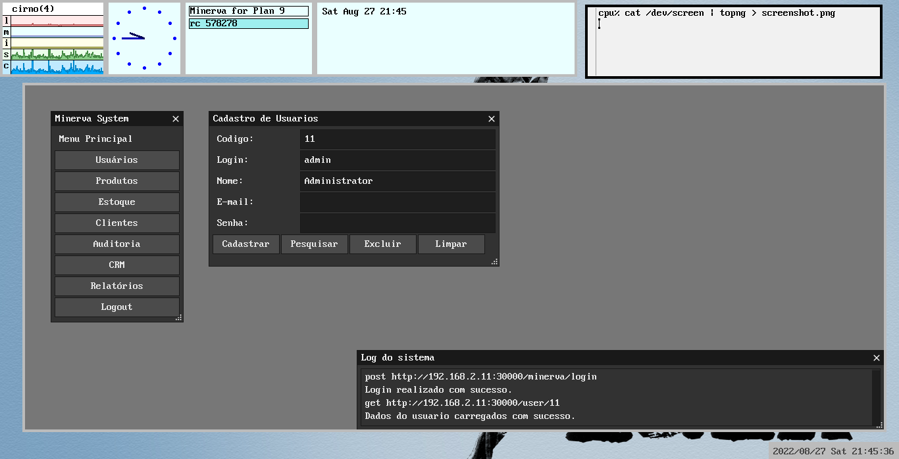
Figure 2: I don't care what other people think, it looks good in my eyes. :^)
This GUI had two characteristics which I enjoyed exploring. First: it was built using Plan 9 C (which is basically1 C, but not POSIX-compliant). Second: to perform connections with the REST API, I used Plan 9's own filesystem for HTTP requests.
Let that sink in for a bit.
I did not install any libraries. I did not have any REST or HTTP clients at hand to perform requests. I also did not open any sockets (although Plan 9 doesn't have sockets2). I simply used a bunch of special directories and files which interact with a service running on the background.
This opens up a lot of possibilities, and this is also part of the Plan 9 philosophy. Got access to the filesystem? Can you see the resource in the filesystem also? Voilà, you get free access. I mean… maybe. I don't wanna just oversimplify things.
For this post, I wanted to explore a little bit of how the webfs service works
and how one can perform HTTP requests using it, especially to a REST API just
like I did before.
Exploring webfs
Let's start with the basics. According to its own manpage on Plan 9, webfs(4)
is a tool that "presents a file system interface to the parsing and retrieving
of URLs". There isn't much to explain about what it is, except maybe that it
relies on the 9P protocol, which is kind of a big deal: even though the original
developers of Plan 9 have moved on a long time ago, 9P is so important that it
is currently used on modern features such as WSL2 on Windows3.
webfs(4) normally is also used with webcookies(4), which is another service
for… well, managing cookies. But we won't need to work with cookies here, so
we can ignore webcookies(4) now.
To run webfs(4), you'll need Plan 9 (of course), and an internet
connection. On this old tutorial, I go step by step on configuring 9front (a
fork of Plan 9 which is still being maintained) on a Raspberry Pi 3B+, which
should provide a head start if you're interested. Afterwards, you just need to
grab an IP for your machine on your local network:
ip/ipconfig
Finally, you can start webfs(4) (and webcookies(4), which should be started
before webfs(4)).
if(! webcookies >[2]/dev/null) webcookies -f /tmp/webcookies webfs
Generally, I put these commands on my $home/lib/profile file, so that every
time I start a session or turn on my Raspberry Pi, I have both a working
internet connection and easy access to web browsing on any web browser that
depends on webfs (such as mothra(1) or abaco(1)).
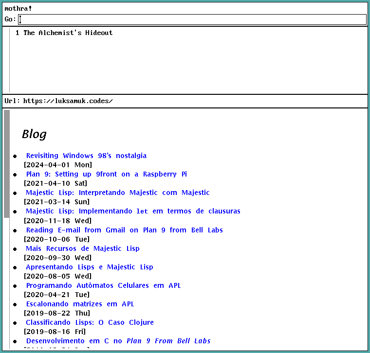
Figure 3: This blog is 100% viewable on mothra(1), satisfaction guaranteed.
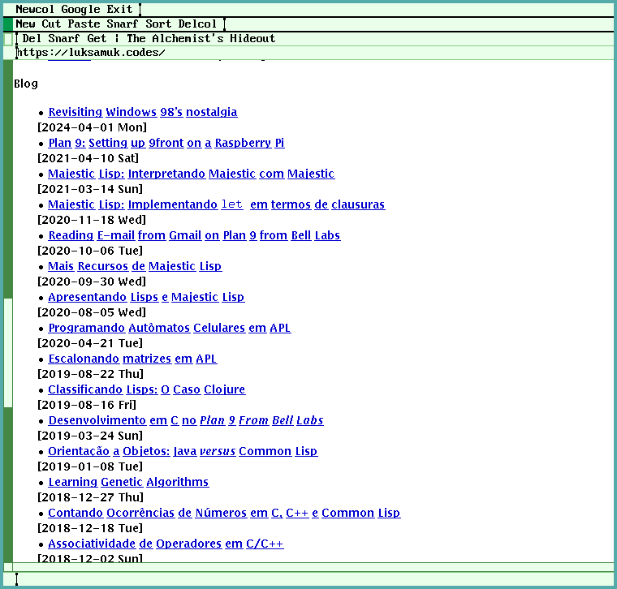
Figure 4: abaco(1) is old stuff that nobody should use, but may work on some cases.
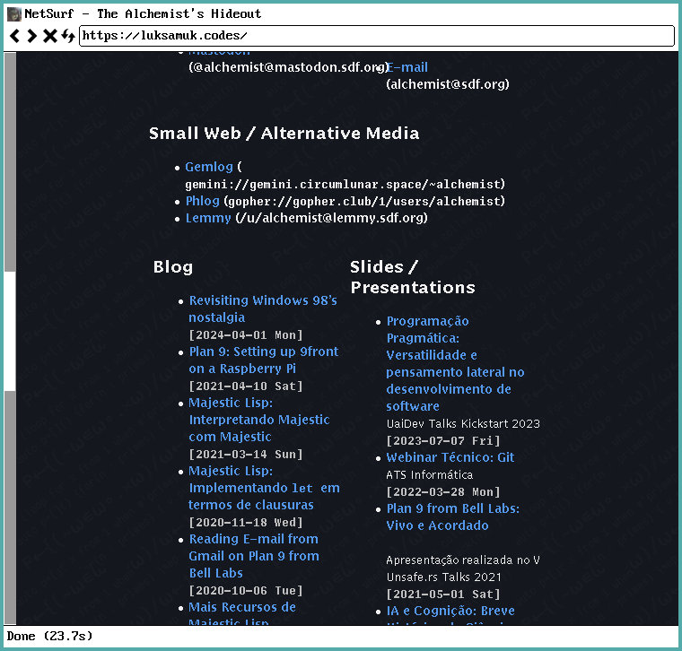
Figure 5: netsurf will make you a lot happier, but you'll have to compile it from source.
The /mnt/web directory
After you run webfs, you get a mount point at /mnt/web, which can be used as
interface for our requests.
/mnt/web starts with an hierarchical directory, and if you didn't do anything
yet, you should see only the clone and ctl files.
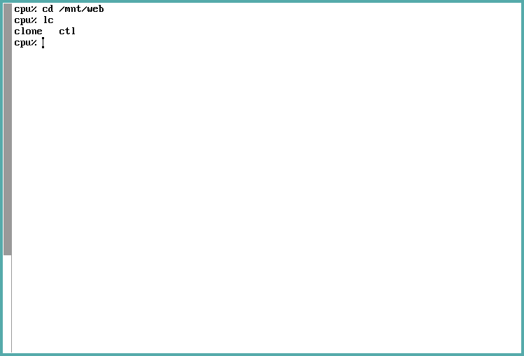
These files are special, in the sense that they're not simple text files. We
should think of them as streams – interfaces to the webfs service.
Global parameters: the ctl file.
ctl is such a special file, which exists for maintaining parameters of the
webfs service. We won't go deep into the purpose and usage of this file, so it
should suffice to know that we can use it to set and retrieve global information
such as request user-agent and request timeout. There is even a way to perform
pre-authentication so you don't have to keep using Basic-type authentication all
the time.
If you print the ctl file, the currently set parameters will be displayed on
console.
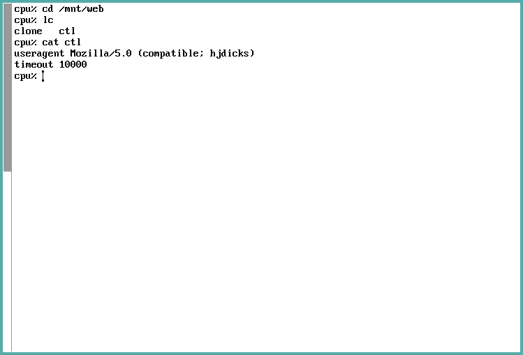
Allocating a connection: the clone file
The most interesting file on this directory is the clone file. If we open it,
then a new directory with a numbered name will be created under /mnt/web (I am
going to refer to said directory as /mnt/web/n).
Let's start by allocating a connection. We then immediately cd into the n
directory:
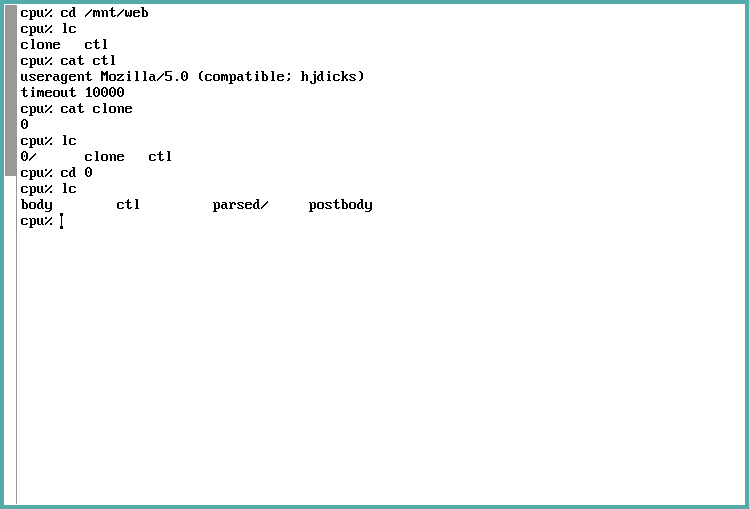
Figure 6: As you can see, in this example, n corresponds to the number 0, so whenever I talk about /mnt/web/n, I am referring to what is, on these screenshots, the directory /mnt/web/0.
So why did we cd into /mnt/web/n, you may ask? Well, because this directory
represents our actual connection. We also do this to prevent the files in this
directory from being considered unused, thus closing and recycling the
connection4.
Performing requests
Now we can perform actual HTTP requests. For that, we'll use the PokéAPI which kindly provides a REST API for fetching Pokémon-related data.
To keep things simple, we're going to fetch a single Pokémon from the Pokémon
list. This can be done through a GET request to
https://pokeapi.co/api/v2/pokemon?limit=1offset=0.
Right now, the file /mnt/web/clone is equivalent to /mnt/web/n/ctl in the
sense that these files can be used to control our requests, but we're going to
use /mnt/web/n/ctl for a visual effect.
First things first, we simply inform webfs that we want to perform a GET
request to the given URL. This can be done through two parameters, and we pass
these parameters to webfs by writing them, one by one, to /mnt/web/n/ctl.
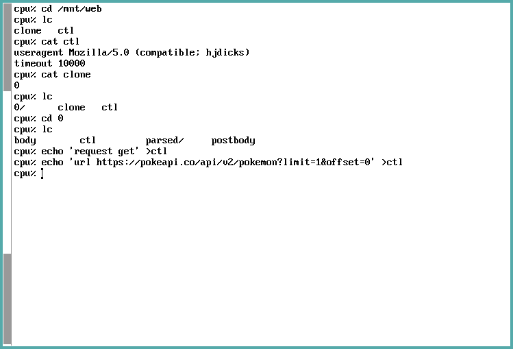
NOTE: If we were performing a request that needs a body, such as a common
POST or PUT request would require, right now we could write the body to the
postbody file. No special magic required here, just be mindful of the data you
write there.
Extracting request data
Let's stop here for a moment. We're ready to perform our request, but we can
also use webfs(4) to parse our URL for us if we're using, for example, rc(1)
to execute a script that does something web-related.
The parts of our request can be seen on the /mnt/web/n/parsed/ directory. This
directory contains a lot of files which are rather useful.
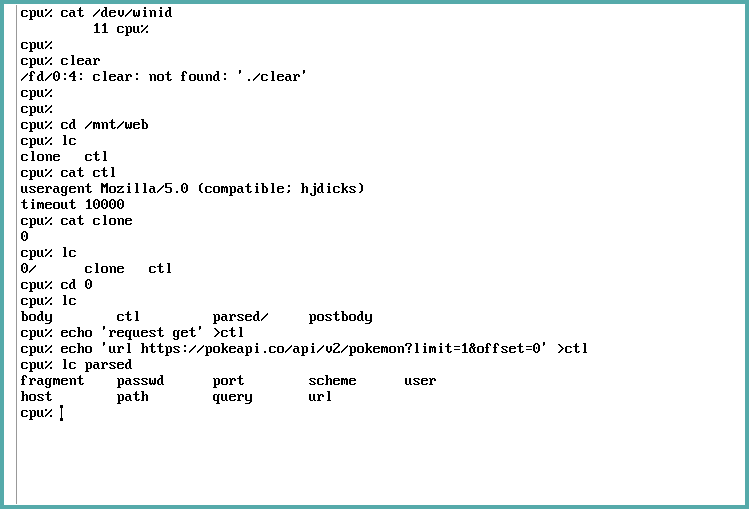
Let's explore these files in greater detail:
fragment: The portion of the URL separated by the#character, if existing (e.g. if you're jumping to a certain heading on the current page while browsing).host: Host address of the server.user,passwd: Basic authentication data, if informed.path: Route of resource on host, if informed.port: Port you're trying to access on the server, if informed.query: Query parameters; the portion separated by the&character, if existing (e.g. if you're trying to pass pagination parameters through the URL).scheme: HTTP, HTTPS, etc.url: Echoes back the used URL.
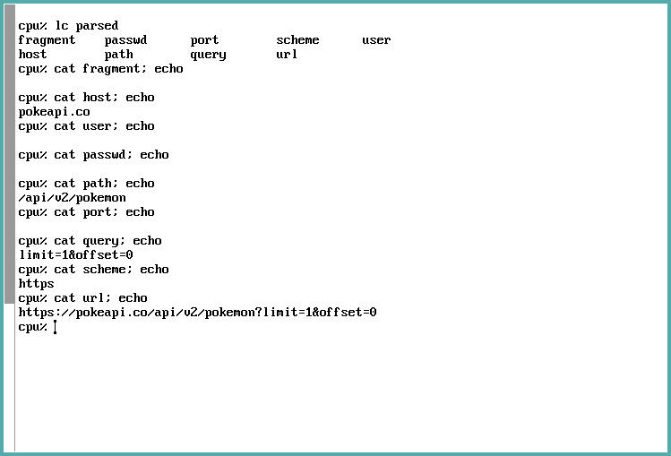
Performing the actual request
The next step is performing the request. Again, there is no magic here: just
open the file /mnt/web/n/body for reading. This is a once-per-request
operation, and it will reset our request parameters after it is done:
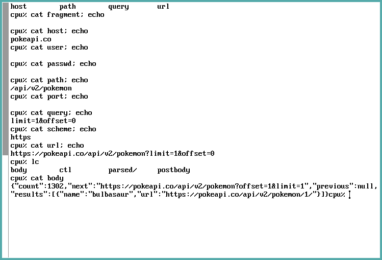
Let's take a better look at the response. I've isolated and formatted what was echoed:
{
"count": 1302,
"next": "https://pokeapi.co/api/v2/pokemon?offset=1&limit=1",
"previous": null,
"results": [
{
"name": "bulbasaur",
"url": "https://pokeapi.co/api/v2/pokemon/1/"
}
]
}
Ok, that seems pretty good. But wait, what if we wanted to view the response again?
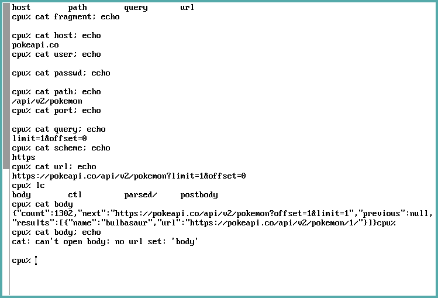
Oops. It attempts to perform the request once again, but now we need to supply request data once more (as you can see, it complains that no url is set).
Exploring response headers
Let's do everything all over again. We'll supply all the parameters, perform the
request, and then we'll look again at our /mnt/web/n/ directory.
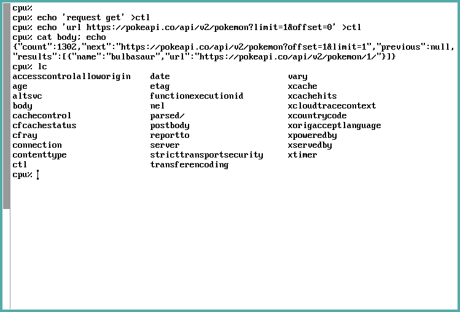
Uh, what the heck, where did all these files come from?
Well, it's pretty simple: all the response headers are parsed just like our
request parameters were parsed in the parsed directory. But for the response,
webfs simply creates a new file on /mnt/web/n/ for each received header.
You'll also notice that the headers have funny names. This is because they were
stripped of hyphens (-), so a header such as access-control-allow-origin
would become accesscontrolalloworigin.
For the sake of comparison, let's take a look at those headers when we perform
such a request on Linux by using curl.
curl https://pokeapi.co/api/v2/pokemon\?limit\=1\&offset\=0 -vvv
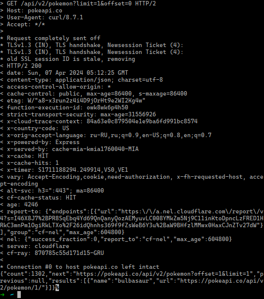
You'll find on the screenshot above that the request data are the lines
beginning with an >, and the response data begins with a <. Among the
response lines, after < HTTP/2 200, you'll see every response header received.
What if something goes wrong?
Suppose that we attempt to perform a request to a resource that does not exist:
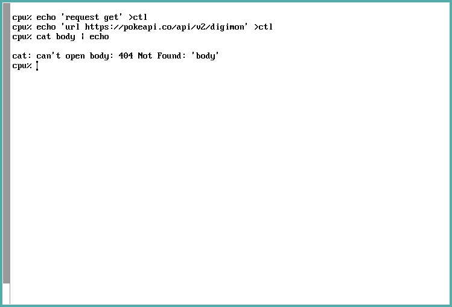
Just like in the example where no URL was set, we get an error. But this time, we can see that the error string is a bit different – we actually get an error code we can deal with.
To work with this error string, we'd have to get output from the stderr stream
(as opposed to the default, stdout, which is basically the main console
output). If you're using the C language, Plan 9 C has useful language functions
such as errstr(2) and constants such as ERR_MAX for handling these – and
trust me, this is easier to do in C than it seems at first sight.
So now you can probably work with most request with ease, even handling HTTP error codes.
Conclusion
I always thought that this approach was an inspiration. Of course using the filesystem has its problems, especially if you're looking for speed, but 9P is still a very good protocol that provides decent speed for most cases.
Using the filesystem as a web interface is also interesting in the sense that this is language-agnostic. You only need to run a specific service, and this service works for any application that might depend on it. It does what it should do – and does it well.
Of course, there are flaws on webfs(4). For example, I am still not sure what
to do when you want to handle other HTTP codes for success cases, e.g. if
you're returning 201 Created for a resource. In these cases, the body file
will open just fine, but the actual HTTP code goes to the limbo. I guess this is
irrelevant for most cases, but this small feature is missing, after all. Unless
I'm the one who missed something from the manpages.
Furthermore, handling HTTP error responses is a little complicated on my end,
since I generally design my APIs to return response bodies on error cases. This
is one more thing I simply could not do at all: retrieve the response body when
the API returns an HTTP error code. stderr is all you get and that's it.
Welp, easier said than done, right? Though I suppose it can't be too hard to make patches for 9front fixing these issues. I might just do that whenever I can.
Footnotes:
By "basically", I mean that it's fine for anyone acquainted with C development. But C development in Plan 9 is still different enough than "ordinary" C for compilers such as GCC or Clang, and why not say this, is also much simpler.
You really don't get access to sockets in Plan 9, at least that I know
of. For your networking needs in C, you'll be using dial(2), and frankly, it
is much more elegant.
As stated here, WSL2 has been modified to start a 9P server, with Windows acting as a client. This is how you're able to access your WSL's files from Windows Explorer.
According to webfs(4) manpage, the connection is recycled when all the
files in /mnt/web/n are closed, so I suppose cd'ing into /mnt/web/n
prevents that at this point. But I am not sure of that… I couldn't really find
anything on this behaviour on the rc(1) shell manpage, but it seemed to work,
so bear with me for a while.